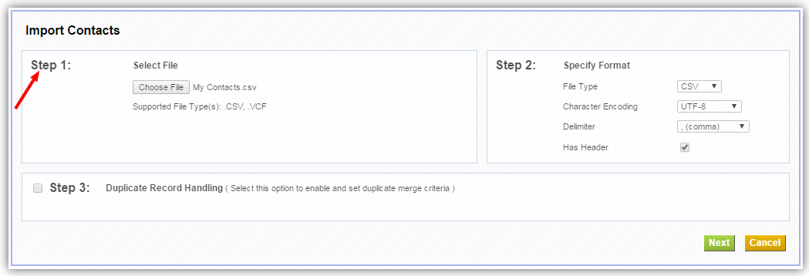
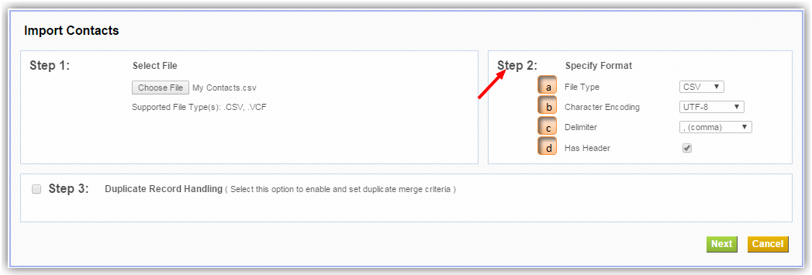
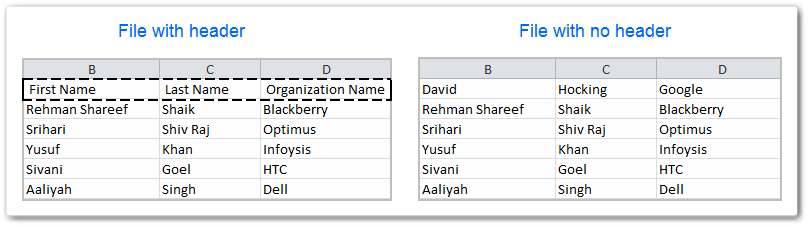
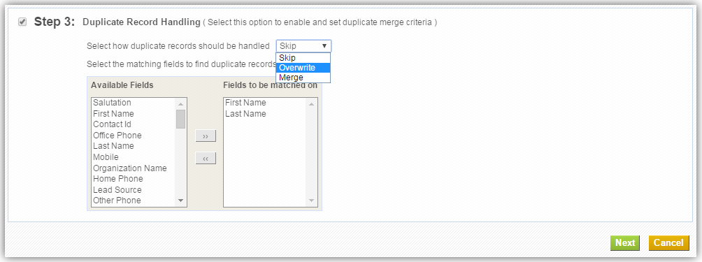
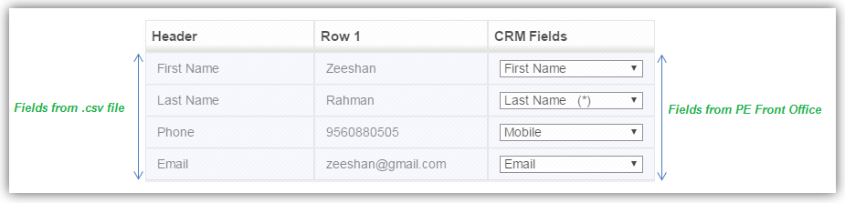
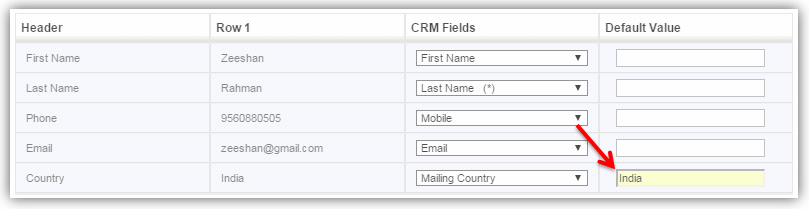
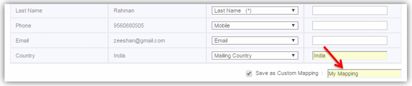
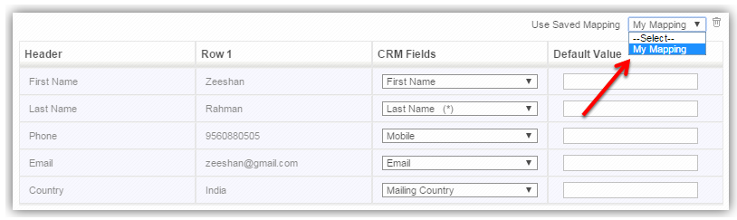
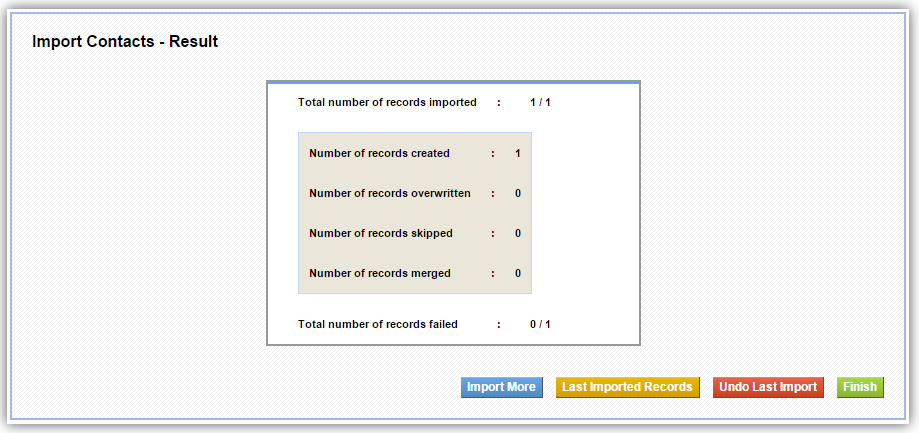

Import Existing Data
If you have your data in .csv or .vcf format, you can import thousands of records instantly and effectively. PE Front Office supports importing data into different modules including Leads, Contacts, Organizations, Opportunities, etc.
Check List
1.Mandatory Fields
Make sure your file addresses all
mandatory fields.
For instance, Last Name and Assigned To fields are mandatory in Contacts
module. You cannot
proceed with importing until or unless you have a value within these fields of your .csv
file. If the value of
mandatory fields is empty, they will be set to '????'.
2.File Size
Make sure that the file to be imported
does not exceed 5 MB
size.
3.Permissions
Admin users can disable Import access
to non-admin users
from profile level. If you can't find the Import option, you should contact your
Administrator to enable Import
permission for your profile.
Getting Started
This tutorial will walk you through different steps involved in importing records into your PE Front Office account. The entire process is simple and straightforward.
Follow few simple steps to import data into PE Front Office
- Click [Module] tab. Eg: Leads, Contacts, etc.
- Click Import icon at the top.
Step 1: Select File
In the first step of importing process, you'll need to browse and upload your import file from your machine.
Here's how to select your.csv file.
Click on the Choose File button, browse for desired file that is to be imported. Csv and vcf are the two file formats currently supported.

Step 2: Specify Format
In the second step of importing process, you'll need to specify import file properties. The details of each property are explained below.

a. File Type : PE Front Office supports two
different file types
namely: .csv and .vcf. Select the appropriate value from the File Type dropdown
that describes the format
of the file you've selected in Step:1. For instance, if you've uploaded .csv file,
select .csv from File
Type field.
b. Character Encoding : Make sure you select
the right character set
in which your import file has been encoded. You'll need to select right encoding of the
file irrespective of the
file contents.
c. Delimiter : PE Front Office supports comma
(,) and semicolon(;) as
field delimiters. The fields in your .csv file are recognized only if they are separated
with delimiters. More
often, in a csv file, fields are separated with commas(,). To know more about
delimiters, click here
d. Header : While importing, the header of
your .csv file is compared
with fields in PE Front Office. Having a header makes it easy for you to map fields.
Click on Has Header
checkbox if your file has a header. First row of your csv file is considered as a
header. Please make sure that
you uncheck the Has Header field if your file doesn't have a header. To know more
about headers, click here

Step 3: Duplicate Record Handling
This is an optional step and comes into play if you would enable the checkbox in Step-3 of the import process. This option will help you in tracing out duplicate records. You can also configure the actions to be performed on duplicate records: skip, overwrite and merge. And finally, select desired fields for duplicate lookup by moving fields from the list of Available Fields to Fields to be matched on by using the right and left arrows.

Following actions can be performed on duplicate records
Skip : After import, duplicate records are
identified based on fields
criteria. If your PE Front Office and .csv file have records in common, to avoid
redundant data, duplicate
records in .csv file are not imported into PE Front Office.
Overwrite :After import, duplicate records
are identified based on
fields criteria. If your PE Front Office and .csv file have records in common, to avoid
redundant data, the
records in .csv file are imported and replaced with records in PE Front Office.
Merge : After import, duplicate records are
identified based on
fields criteria. Merge, unlike overwrite and skip, checks for duplicate records first
and then captures only
useful information from your .csv file and updates it in your PE Front Office. Learn more
Here's a sample
image that depicts how all these properties work
Step 4: Map CRM Fields
In the final step of import process, you will need to map import file Header/Column to fields in PE Front Office. Fields will be automatically mapped if your csv file's header matches with PE Front Office field label.

You can provide default values for mapping fields which will be picked up in case if the
value for any field in
file will be empty.

Also, frequently used mappings can be saved and reused.

Saved mappings will be accessible across all users. You can delete the saved mappings by
clicking on Trash icon.

After successfully mapping fields, click Import button.
Import Results
After successfully importing records into PE Front Office, the imported results are displayed in tabular format.

- Import More
- Lets you start all new import again.
- Last Imported Records
- Displays records imported lately with the help of paging support.
- Undo Last Import
- Deletes all records that are created during the last import session. Reference records related to other modules will not be deleted.
Notifications
Import Scheduled!
If you have more than 1000 records in your file, your import will be scheduled on cron which is configured to run once in every 15 minutes. If you have configured your Outgoing Server and Email id properly, an email notification will be sent to you after successful import.
Data Corruption Error
This error shows up when the import is interrupted for various reasons like crashing in between, or cancelled by a user etc. This error indicates that the import table still has records to be imported into the system, but all the information related to the import (like mapping, default values, merge criteria) are all lost. So these records can no more be imported and the user needs to clear this data before starting any other import.
Import Locked Error
This error will be displayed if the import has been already been started on the same module by any other user in PE Front Office. The details of the module, the user, and the time at which the Import has been locked is detailed within the error message itself.
Import Interrupted Error
If an Admin user is performing import and if a non-admin user tries to start an import on the same module, he will get to see the Import Locked error. If non-admin user is doing import, and Admin user attempts to import on the same module, same time, he can be able to see the status of the current import and he will even have powers to cancel the current import; Consequently, the Import Interrupted Error will be displayed to non-admin user.
Heads Up!
- If you would start importing in one particular module, you cannot import records into the same or any other module in PE Front Office.
- If you would trigger import on a particular module, neither you nor any other user in PE Front Office can import records into the same module. However, other users can import records into other modules in PE Front Office.